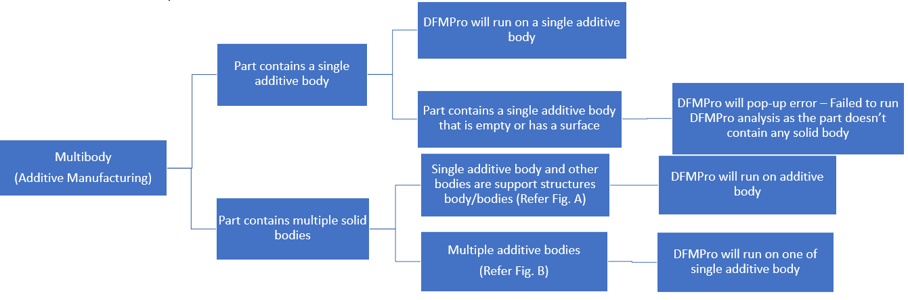
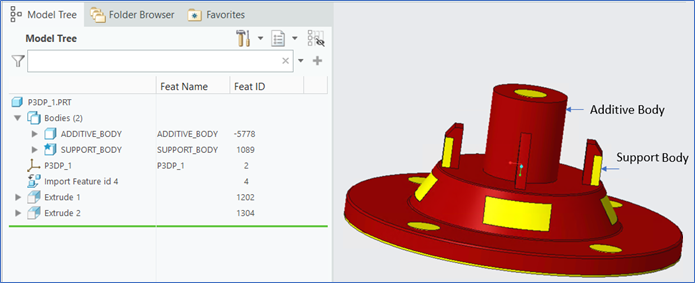
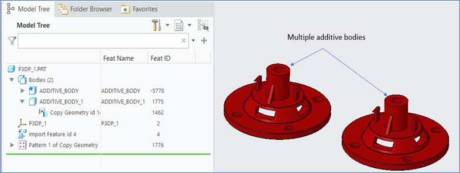
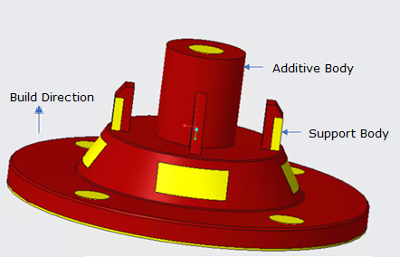

積層造形のマルチボディ部品設計の場合、部品に 1 つの積層造形ボディが含まれ、他のボディがサポート構造ボディとして使用されているとき、DFMPro はビルド方向に基づいて積層造形ボディを特定し、解析を実行します。
部品に複数の積層造形ボディが含まれている場合、DFMPro は単一の積層造形ボディに対して解析を実行します。
マルチボディ部品設計の場合、ビルド方向に基づいて最上部のボディが積層造形ボディと見なされ、残りのボディはサポート構造ボディとして扱われます。サポート構造ボディは解析対象から除外されます。
以下のフローチャートは、マルチボディ積層造形のケースを説明しています。


図 A

図 B
注記：
マルチボディの積層造形部品設計では、DFMPro が積層造形ボディを正しく識別できるように、正しいビルド方向を指定してください。
